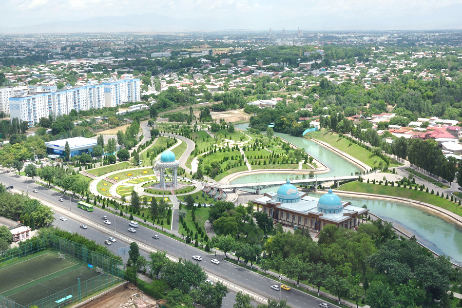
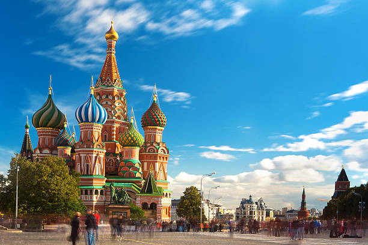

Столицы
Ташкент - столица и крупнейший город Узбекистана, город республиканского подчинения. Крупнейший по численности населения город Центральной Азии[7] (более 3 млн человек), центр Ташкентской городской агломерации, важный политический, экономический, культурный и научный центр страны, а также авиационный, железнодорожный и автомобильный узел. Расположен на северо-востоке страны, недалеко от границы с Казахстаном.

 Лондон - столица и крупнейший город Англии и Великобритании. Административно образует регион Англии Большой Лондон, разделённый на 33 самоуправляемых территории (см. боро Лондона). Население города в 2023 году составляет 9 648 110 человек[3]. Образует агломерацию Большой Лондон и более обширный метрополитенский район. Расположен на юго-востоке острова Великобритания, на равнине в устье Темзы, вблизи Северного моря. Главный политический, экономический и культурный центр Соединённого Королевства.
Лондон - столица и крупнейший город Англии и Великобритании. Административно образует регион Англии Большой Лондон, разделённый на 33 самоуправляемых территории (см. боро Лондона). Население города в 2023 году составляет 9 648 110 человек[3]. Образует агломерацию Большой Лондон и более обширный метрополитенский район. Расположен на юго-востоке острова Великобритания, на равнине в устье Темзы, вблизи Северного моря. Главный политический, экономический и культурный центр Соединённого Королевства.
Москва - столица России, город федерального значения, административный центр Центрального федерального округа и центр Московской области, в состав которой не входит[12]. Мегаполис[12]; крупнейший по численности населения город России и её субъект — 13 149 803[4] человека (2024), что делает Москву 22-й среди городов мира по численности населения[13]. Центр Московской городской агломерации. Самый крупный город Европы по площади[14] и населению.
